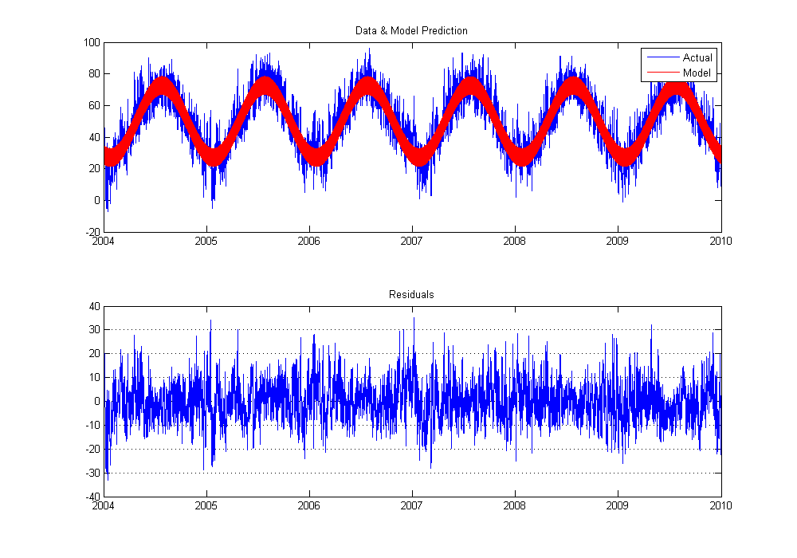
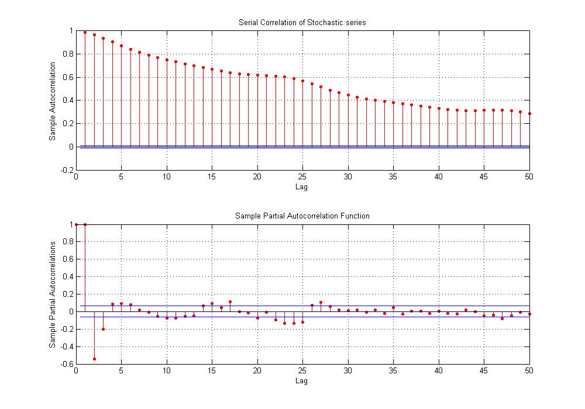
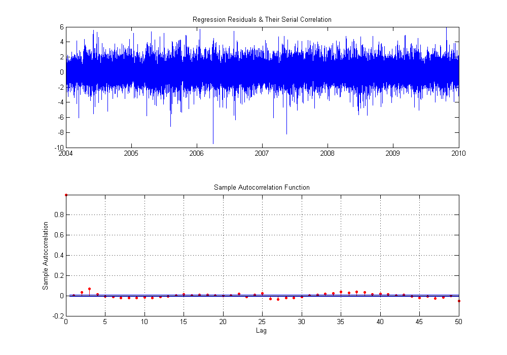
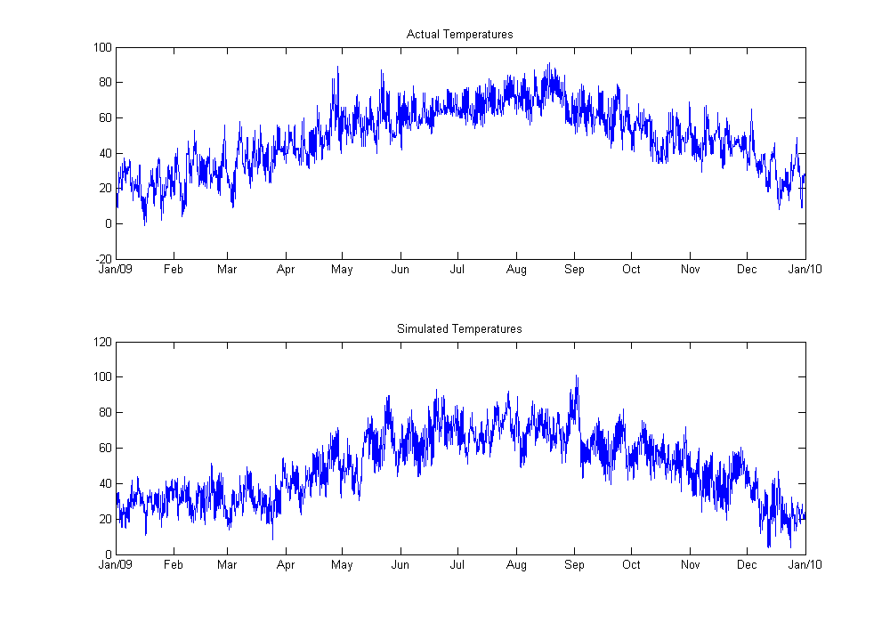

Modeling & Simulating Hourly Temperature
This example demonstrates fitting a non-linear temperature model to hourly dry bulb temperatures recorded in the New England region. The temperature series is modeled as a sum of two compoments, a deterministic non-linear function that explains the seasonal or expected temperature for a given hour in a given year and a stochastic component that explains deviations of actual temperature from average values.
Contents
Import Data
The data set is loaded from a previously created MAT-file. It consist of a vector of serial dates and the corresponding historical recorded temperature.
clear
load Data\TempSeries
whos
Name Size Bytes Class Attributes dates 52608x1 420864 double drybulb 52608x1 420864 double
Seasonal Component (Deterministic)
The deterministic or expected temperature component is modeled with a sum of sines model, motivated by the physical nature of temperature and periodicities observed in the data. Curve Fitting toolbox is used to estimate the parameters of the model. The Statistics Toolbox function NLINFIT can also be used to estimate the model parameters.
% Compute mean (yearly average) and remove it from the series m = mean(drybulb) drybulb0 = drybulb - m; % Fit double-sine model model = fit(dates, drybulb0, 'sin2')
m =
49.872
model =
General model Sin2:
model(x) = a1*sin(b1*x+c1) + a2*sin(b2*x+c2)
Coefficients (with 95% confidence bounds):
a1 = 22.79 (22.7, 22.89)
b1 = 0.01721 (0.01721, 0.01722)
c1 = -9.746 (-14.65, -4.84)
a2 = 5.698 (5.602, 5.795)
b2 = 6.283 (6.283, 6.283)
c2 = 67.32 (47.76, 86.88)
Visualize Model Accuracy
Analyze the fit results visually with a custom plot. The two axes in the plots are linked which greatly enables visual exploration of the data. Also note that the date ticks on the X-axes are dynamic with respect to zooming and panning.
pred = model(dates) + m; res = drybulb - pred; fitPlot(dates, [drybulb pred], res); disp(['Mean Absolute Error: ' num2str(mean(abs(res))) ' degrees F']);
Mean Absolute Error: 6.1744 degrees F
Analyze Serial Correlation in Residuals
One of the features apparent in the above plot is that the residuals are not serially correlated. This is expected as above average temperatures are likely to follow above average temperatures. This serial correlation can be explicitly measured. Here, the functions AUTOCORR and PARCORR are used to display the autocorrelation and partial autocorrelation in the series.
figure;
subplot(2,1,1);
autocorr(res,50);
title('Serial Correlation of Stochastic series');
subplot(2,1,2);
parcorr(res(1:1000),50);
 Modeling the Stochastic Component with a seasonal AR model
One could choose to model the random component a mean reverting drift SDE. However, because of the seasonality, we will use an auto-regressive model with seasonal lags. The MATLAB backslash operator can be used here instead of the REGRESS function, but this will not return confidence intervals.
lags = [1 2 3 4 23 24 25 47 48 49];
Xres = lagmatrix(res, lags);
[beta, betaci, res2] = regress(res, Xres);
disp('Lags Coefficients and Confidence Intervals');
disp([lags' beta betaci])
Lags Coefficients and Confidence Intervals
1 1.2931 1.2847 1.3016
2 -0.13272 -0.14654 -0.1189
3 -0.18626 -0.2 -0.17251
4 0.0044918 -0.0037637 0.012747
23 0.12228 0.11394 0.13062
24 0.0010838 -0.012706 0.014874
25 -0.12824 -0.1367 -0.11977
47 0.066489 0.05817 0.074808
48 0.023581 0.0098334 0.037329
49 -0.08112 -0.089443 -0.072797
Analyze Residuals of Regression for Serial Correlation
The residuals from the regression should now be mostly serially uncorrelated.
figure;
subplot(2,1,1);
plot(dates, res2); datetick
title('Regression Residuals & Their Serial Correlation');
subplot(2,1,2);
autocorr(res2(lags(end)+1:end),50);
 Fit a Distribution to Residuals
Since the residuals are mostly uncorrelated, they can be modeled as independent draws from an appropriate distribution. A t-location-scale distribution can be shown to provide a good fit.
PD = fitdist(res2, 'tlocationscale');
Summary of model
The temperature model can now be defined by,
- The mean temperature "m"
- The sinusoidal model "model"
- Regression parameters "beta"
- Autocorrelation lags "lags"
- The residual probability distribution "PD"
- Optional presample data (the last observations of temperature for regression)
tempModel = struct('m', m, 'sinmodel', model, 'reglags', lags, 'regbeta', beta, 'dist', PD, 'presample', res(end-lags(end)+1:end)); save SavedModels\TemperatureModel.mat -struct tempModel clearvars -except tempModel dates drybulb
Simulate model
We can now simulate this model for 2009 and compare the simulated values to the observed data from 2009. Notice that we have captured the relevant features in our model.
newDates = dates(end-365*24+1:end); simTemp = simulateTemperature(tempModel, newDates, 1); % Plot simulation results ax1 = subplot(2,1,1); plot(newDates, drybulb(end-365*24+1:end)) title('Actual Temperatures'); ax2 = subplot(2,1,2); plot(newDates, simTemp); title('Simulated Temperatures'); linkaxes([ax1 ax2], 'x'); dynamicDateTicks([ax1 ax2], 'linked');